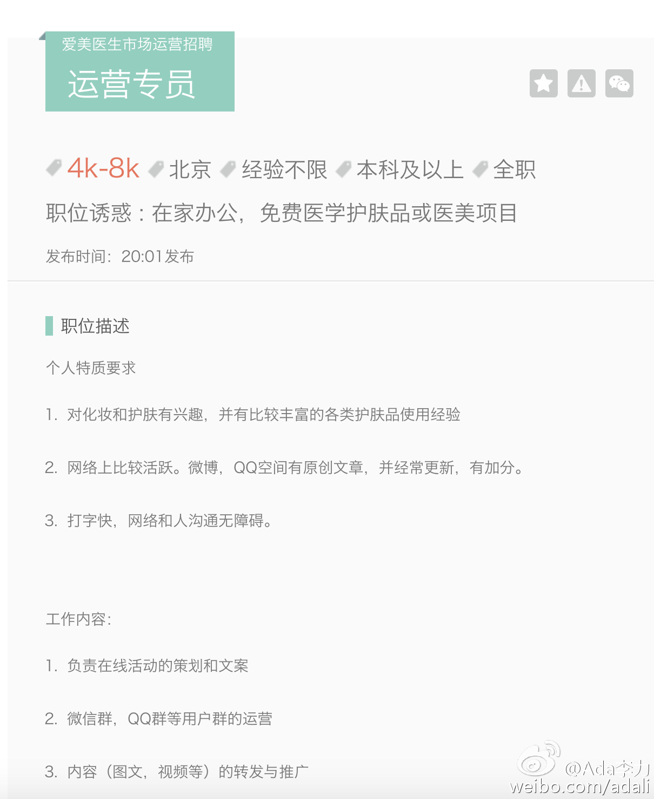
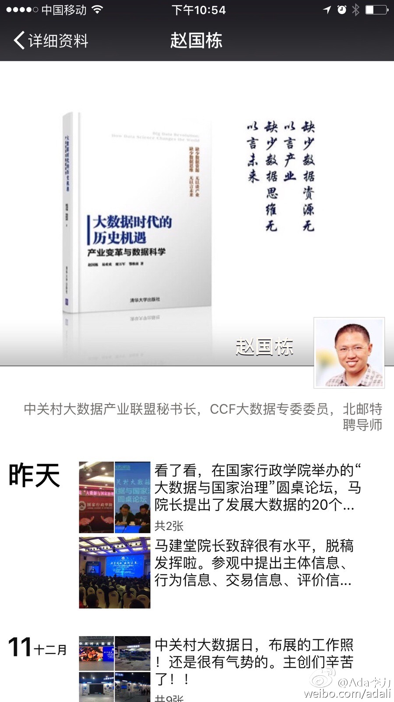

#社群运营# 爱美医生招运营专员啦。喜欢研究护肤的可以来看看职位，有机会向国内最TOP的医美大师当面请教，可以在家办公，还有机会免费试用医学护肤品和体验医美项目。公司介绍和详细职位 -> 网页链接 
#创业#股东中有一人对做问诊特别执着，我相当不感冒。一个原因是做问诊的移动医疗App特别多。另外的原因是：医生资源短缺这个瓶颈，是没办法克服的。 在稀缺资源上做文章，要么是提高每个医生的产出，要么是提高医生的每小时售价。即使能解决，又没办法规模化，不是个好的商业模式。
也能理解为什么大家都要做问诊。给我们留言的用户，大比例是咨询自己的皮肤问题，当问诊来用的。不搭理这些用户也不行，即使不做问诊，我们还是配了专业皮肤科医师，来做医学客服。@Ada李力:#创业#股东中有一人对做问诊特别执着，我相当不感冒。一个原因是做问诊的移动医疗App特别多。另外的原因是：医生资源短缺这个瓶颈，是没办法克服的。 在稀缺资源上做文章，要么是提高每个医生的产出，要么是提高医生的每小时售价。即使能解决，又没办法规模化，不是个好的商业模式。
//@陶建辉快乐妈咪: 能认清这一点的人很少@Ada李力:#创业#股东中有一人对做问诊特别执着，我相当不感冒。一个原因是做问诊的移动医疗App特别多。另外的原因是：医生资源短缺这个瓶颈，是没办法克服的。 在稀缺资源上做文章，要么是提高每个医生的产出，要么是提高医生的每小时售价。即使能解决，又没办法规模化，不是个好的商业模式。
“创富时间——半年：赵国栋2015年辞职创业，到10月底将其创业项目控股的中融金卖给A股上市公司奥马电器，并取得对方控股权，公司估值超过200亿元，个人身家超过40亿元。而且，赵国栋通过资本运作控制公司，这个过程中是不花一分钱，却多出来现金、股份和控制权。” --- 竟然这么厉害？？？ 